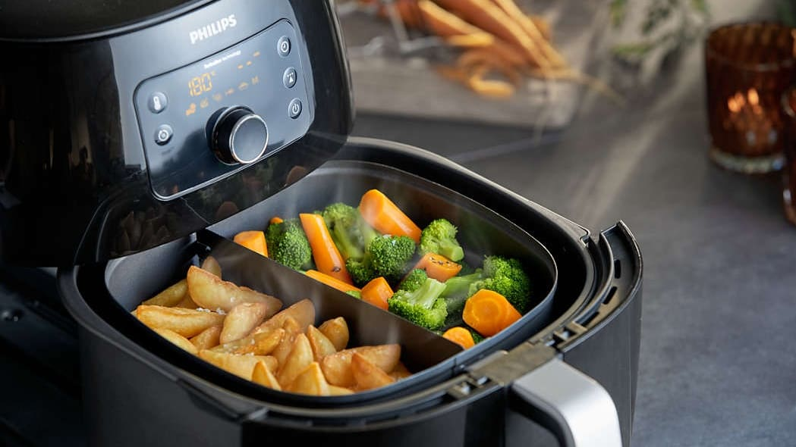
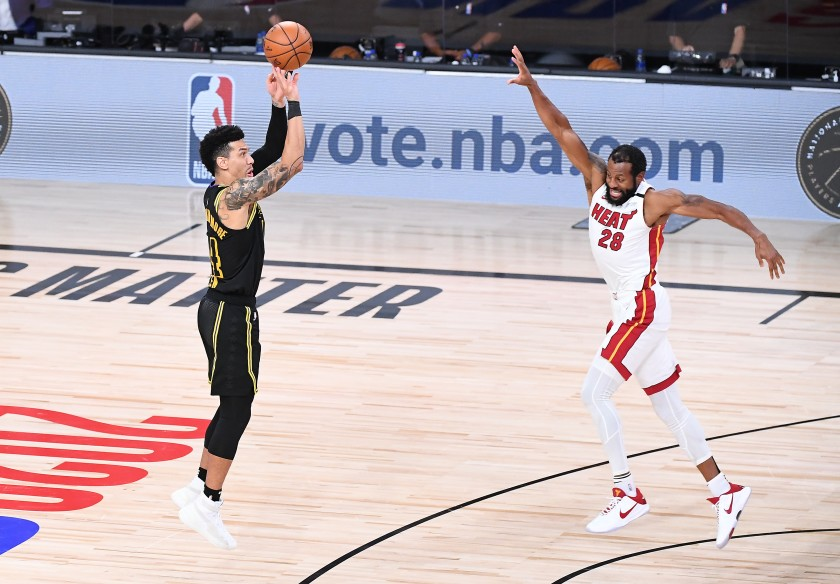

Most Recent Articles
My Covid-19 Starter Kit
By Nnamdi Iroha October 11, 2020

Hello MI 349, and welcome to my first ever blog post. For this post I thought I would introduce you guys to my COVID-19 starter kit featuring my necessities during the pandemic. For starters, I have to have a gaming system, preferably an Xbox. During this time, it is very easy to get bored in the house and lose connection with friends, but thanks to the Xbox I’m able to connect with friends online and play games with them or just chat. Next, I have an at home workout mat. Due to the restriction of many activities, it’s hard to remain in shape, so I use my workout mat to knockout small workouts and get my blood flowing. Lastly, I’m going to group together an airfryer, and cooking recipes. With all the time I have in the house, the best way to stay entertained is to try something new, and I do this through cooking. At least twice a week, my sister and I search for new food recipes to try and cook for our parents during dinner. I added the airfryer to this list because it is one of the best instruments for cooking or reheating food in a short period of time, and it gets a lot of usage time in this house. There you have it, my COVID-19 at-home starter kit!
Why I Don't Blame Danny Green
By Nnamdi Iroha October 11, 2020

After the Miami Heat won game 5 of the NBA Finals against the Los Angeles Lakers, many people took to social media to berate Danny Green because he missed an open shot that had the potential to be a game winner and series winner for the Lakers. While everyone is mad and sending him death threats, I’m at home thinking, “Danny Green shouldn’t have been taking that shot anyway.” My reason for saying this is because LeBron James, who some call the greatest to ever play the game, had the hot hand and a one on one possession to end the game, but he calls for a screen resulting in him getting quadruple teamed by the Heat and having to pass out to Green. In this situation, LeBron must try to get a bucket on Jimmy Butler by using his perimeter skills. If LeBron makes or misses the shot, fans at home can live with knowing that the best player on the floor, and the hot hand, got the final shot. Instead, everyone’s at home blaming Danny Green who also was thrown a bad pass on the final shot. That’s my take on the situation. Everyone will have their own opinions.